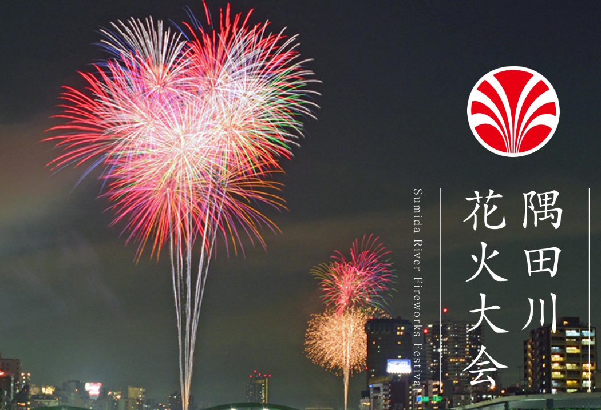
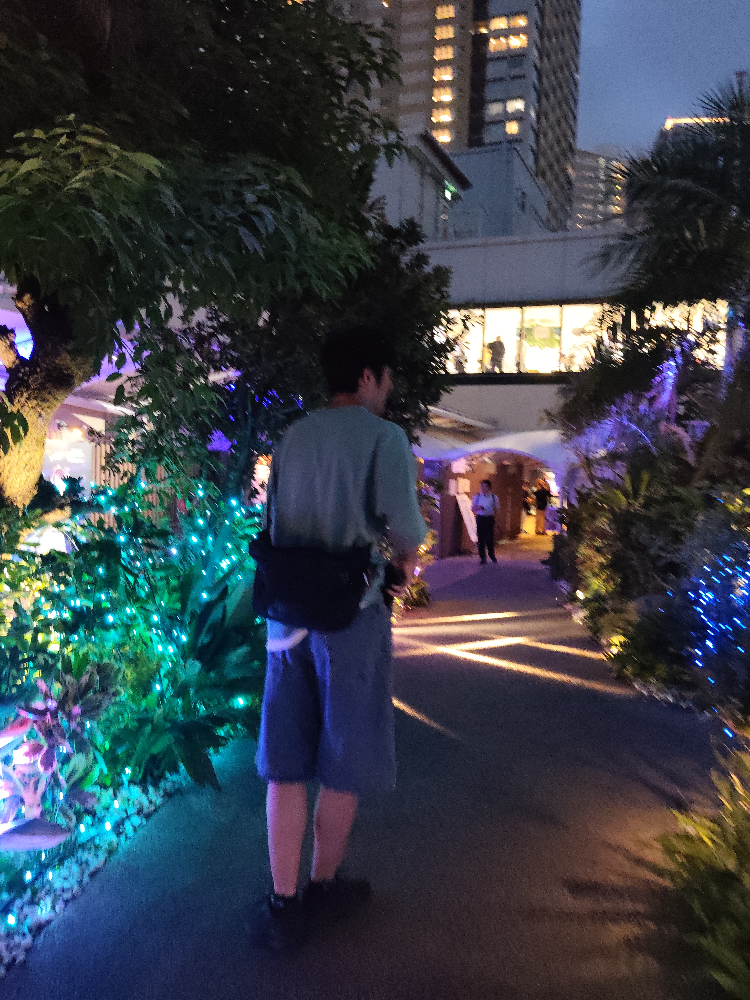
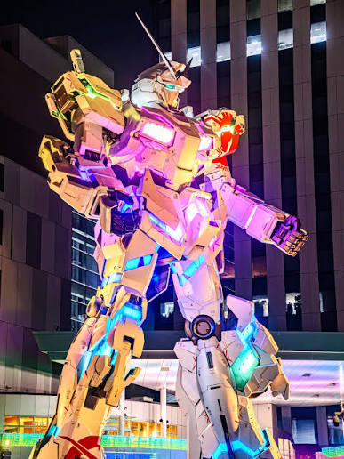

奥田の夏休みRTA
夏休みを過ごすRTAをしたので、忘備録として残しておきます。   
レギュレーション
・夏休みの期間は7月24日から8月26日までの34日間
・夏休み中の課題を終わらせる
1⃣オープンキャンパスに行く
2⃣学校の課題をする
3⃣お台場のユニコーンガンダムを見に行く
4⃣花火大会に行く
5⃣
・夏休み期間がどのくらいの速さで過ぎ去ったかの体感時間を主観で評価します。
それでは、夏休みRTAの振り返りを始めます。
夏休みにやったこと
完走した感想といたしましては、
やはりオープンキャンパスがつらかったです。
この灼熱の中キャンパス内や建物内を歩き回らないといけないということが
肉体に大きく影響したと思います。
そのようなことを考慮して、総合点は100点満点中の65点とさせていただきたいです。
残りの35点はやはり、家の中にいるときに頑張りきることができなかったことが大きく影響していると思います。
家で自分のやりたいことなどを頑張らずに呆けていると体感時間が伸びてしまいますから、
そういった観点での減点とさせていただきます。